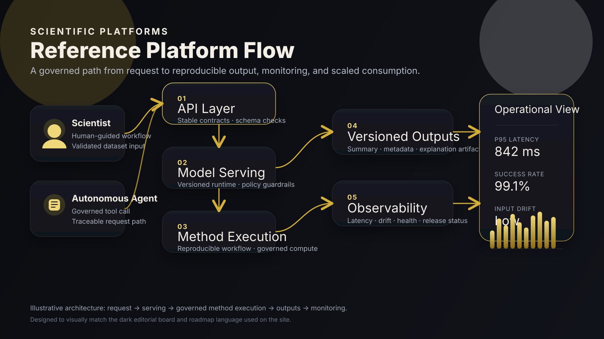

Marquee architecture
Reference platform flow

The diagram shows a simple, governed path from scientist or autonomous tool to API layer, serving infrastructure, scientific method execution, versioned outputs, and observability signals.
Editorial demo · scientific platforms · neutral language
A more effective way to operationalize scientific methods with machine learning platforms. This proof of concept transforms experimental workflows into governed, reproducible, and scalable services. Proof of concept delivered: 03/24/26.
Browse modes
Ranked platform board
Each card expands into neutral scientific language, sample artifacts, and operational signals.
Marquee architecture

The diagram shows a simple, governed path from scientist or autonomous tool to API layer, serving infrastructure, scientific method execution, versioned outputs, and observability signals.
Sample API payload
{
"request_id": "run-2026-03-24-001",
"method_version": "v1.2.0",
"dataset_ref": "scientific-dataset-alpha",
"parameters": {
"mode": "validated",
"threshold": 0.72,
"include_explanation": true
},
"output_contract": {
"format": "json",
"include_trace": true,
"include_artifacts": ["summary", "metadata", "explanation"]
}
}Scientist workflow
Agent workflow
Observability panel
Illustrative only: combine structured logs, latency tracking, drift checks, and release status in one operational surface.
Featured demo
Three-minute Chrionml© AI Labs walkthrough showing a RAG playbook for travel search monetization, including retrieval, ranking, and production-oriented workflow design.
AI Realty Insider
Explore the full AI Realty Insider video stream for forecasting demos, market analysis, and applied AI decision-system content.
Platform roadmap
Scientific methods begin in exploratory environments, where teams validate feasibility, define expected outputs, and establish the initial analytical approach.
Inputs, outputs, and runtime assumptions are formalized so methods can be executed consistently, compared reliably, and reused beyond a single notebook or analyst.
Validated methods are packaged into versioned services with stable API contracts, enabling integration across scientific workflows and operational systems.
Performance, drift, service health, and release behavior are monitored continuously to support trust, operational resilience, and governed runtime decisions.
Platform services become consumable by scientists, applications, and autonomous agents through standardized interfaces, traceability controls, and governed access patterns.
Repo link + architecture note
This proof of concept demonstrates a structured approach to transforming experimental scientific workflows into governed, reproducible, and scalable platform services. It addresses a core challenge in research environments: bridging the gap between prototype analysis and production-grade systems that can be reliably used across teams, systems, and decision layers.